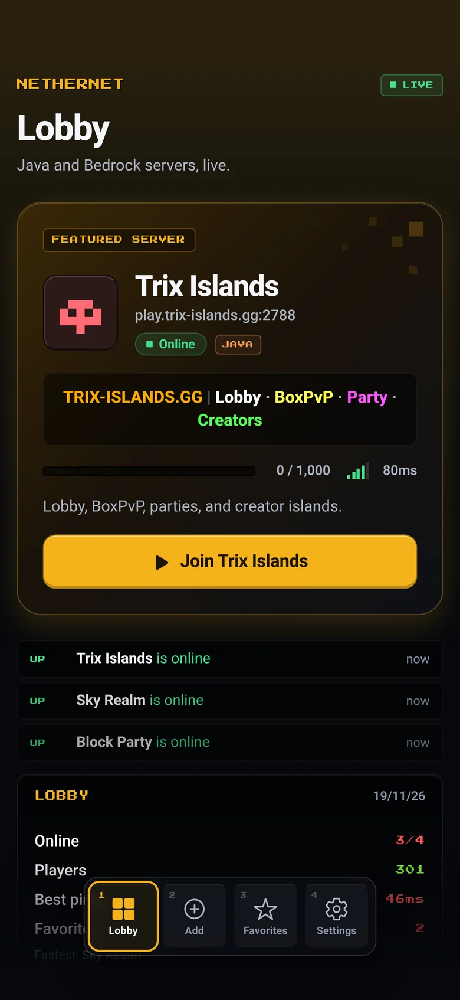
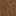
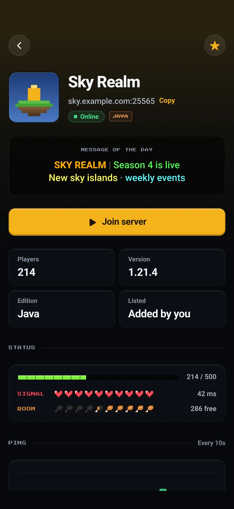
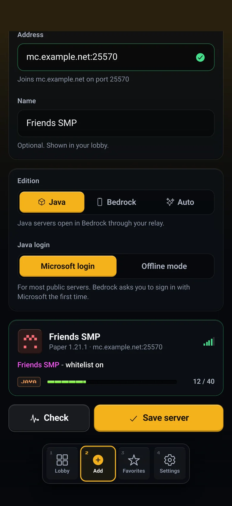
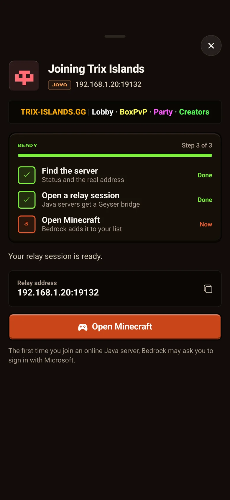

Bedrock, any port
Type a domain, an IP or a custom port. Bedrock servers open straight in the game, no relay needed.
A live lobby for Java and Bedrock servers. See who is online and how fast it answers, then jump in with the touch controls you already know.

Three blocks, no account.
Type a domain, an IP or a custom port. Bedrock servers open straight in the game, no relay needed.

Run the small open-source relay. It starts a short Geyser session and NetherNet opens a link pointed at it.

Your list, favorites and relay address live on the device. No sign-in, no analytics, no tracking.
Built like a game HUD.


